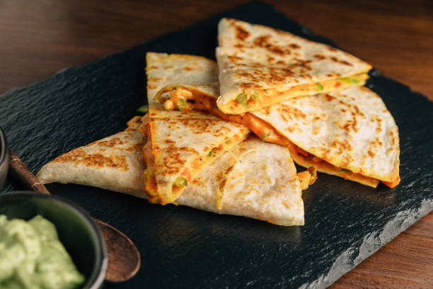

Home
Chicken Quesadillas

Description
A chicken quesadilla is a Mexican-inspired dish made by filling
a flour tortilla with seasoned chicken, cheese, and sometimes
other ingredients, then grilling or pan-frying it until the
tortilla is crispy and the cheese is melted and gooey
Ingredients
- 1 tbsp oil
- 1 lb chicken breast cut into small pieces
- 1 tbsp taco seasoning
- 1/2 large bell pepper diced
- 1/2 yellow onion diced
- 2 tbsp unsalted butter
- Flour tortillas
- 2 cups mexican cheese
Steps
- Preheat skillet with oil on medium heat
- Add in the chicken and taco seasoning. Cook for 4 mins
- Add in the bell pepper and onion. Cook for an additional
5 minutes, then set to side
- On skillet, add butter or oil and place a tortilla on top
- Add mexican cheese and chicken mixture to half of the tortilla.
Top off with more cheese
- Fold the tortilla over to close it
- Cook for a few minutes until the tortilla is golden brown.
Flip over and repeat
- Serve with some guacamole and sour cream